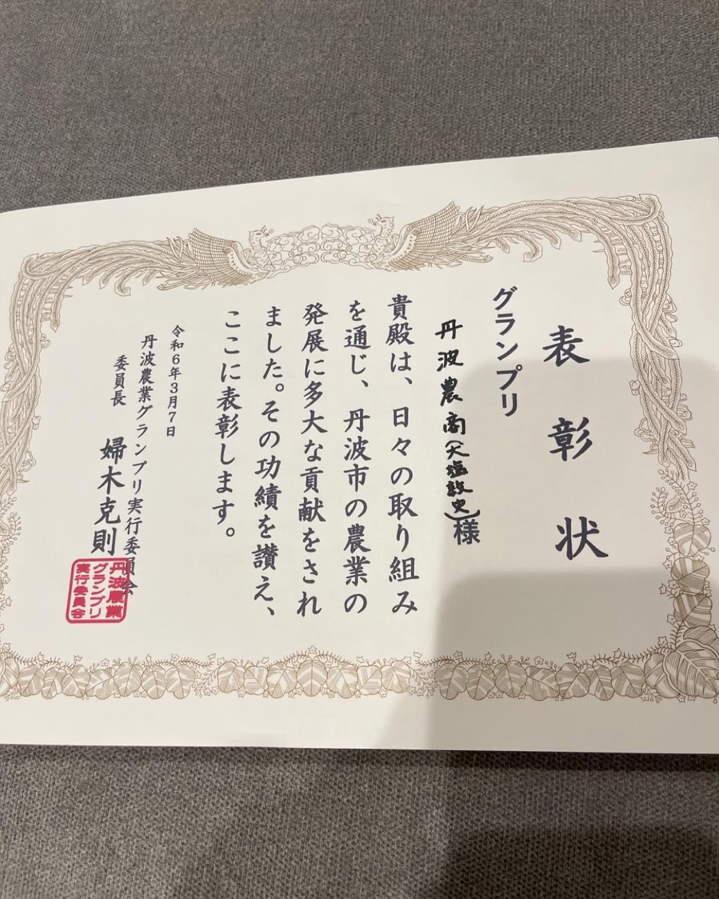

私たちの歩み
 2019年県内の牧場で修行したのち、地元・丹波市市島町で独立。母牛2頭から繁殖を始めました。
2019年県内の牧場で修行したのち、地元・丹波市市島町で独立。母牛2頭から繁殖を始めました。 2020年春、私たちの牛舎で最初の子牛が生まれました。
2020年春、私たちの牛舎で最初の子牛が生まれました。 2021年母牛は20頭に。初めて子牛を但馬家畜市場へ送り出しました。
2021年母牛は20頭に。初めて子牛を但馬家畜市場へ送り出しました。 2023年65頭目のお産で、初めての双子が生まれました。4年前と比べて母牛は7倍、田んぼも7倍に。
2023年65頭目のお産で、初めての双子が生まれました。4年前と比べて母牛は7倍、田んぼも7倍に。
2024年第11回丹波農業グランプリで、私たちの取り組みがグランプリをいただきました。 いま新しい牛舎で、母牛65頭・子牛49頭を育てています。
いま新しい牛舎で、母牛65頭・子牛49頭を育てています。
- 2頭2019年 はじまり
- 65頭いまの母牛
- 49頭いまの子牛
- 157頭これまでに子牛市場へ
※ 2026年10月5日時点。子牛市場への出荷は2021年1月〜2026年7月の累計（自社の牛の管理記録より）。